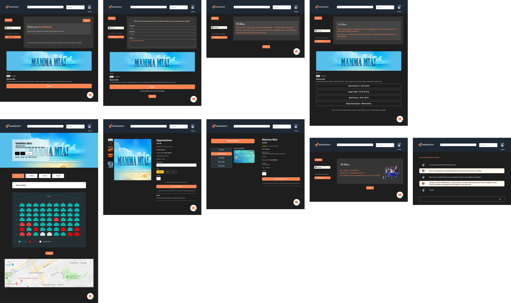

Competitor Analysis

SWOT Analyisis ( Identifying Gaps)

User Story - Meet Alex:
Alex loves theater and wants a seamless way to buy tickets. His goal is to surprise his mom with a special birthday evening at a play she’ll adore.

Inciting Incident:
Alex wants to surprise his mom with tickets to ‘Mamma Mia!’—her favorite musical—for her birthday. But every theater website he checks either crashes midway, shows phantom ‘available’ seats that vanish at checkout, or flatly says ‘Sold Out.’ With time running out, he’s desperate to find another way to make her night special.

Struggle:
Alex slams his laptop shut, defeated. For two hours, he’s cycled through 10+ tabs: scalper sites charging triple the price, sketchy resellers with blurry seating charts, and endless ‘SOLD OUT’ banners mocking his efforts. His mom’s birthday is tomorrow, and he’s running out of time. Just as he’s about to give up, a Reddit thread mentions ShowScout—a platform that aggregates verified tickets across theaters. Skeptical but desperate, he clicks the link, muttering, ‘This better not be another scam.’

Crises:
With his mom’s birthday just hours away, Alex discovers ShowScout’s ‘Waitlist’ feature—a last-ditch lifeline for sold-out events. He hesitates, recalling how other platforms’ waitlists felt like false hope (‘We’ll email you... maybe’*)
A disclaimer warns, ‘Success not guaranteed. Average wait time: 2 hours.’ His gut says it’s another dead end, but the alternative—disappointing his mom again—is worse. He hesitates, remembering how she’d said, ‘Don’t stress, sweetie. Just being with you is enough.’ But this time, he wants it to be perfect. He clicks ‘Join Waitlist,’ muttering, ‘Please work.’ The app assigns him Spot #42. A progress bar crawls. 30 minutes pass. Spot #15. Then, a notification: ‘Only 2 tickets left! Confirm now—expires in 5:00.’
Climax:
‚Äú5:00 minutes. Alex‚Äôs heart pounds as the timer blinks red. He scrambles to enter his card details, but ShowScout‚Äôs one-click checkout (saved from his earlier signup) auto-fills everything. ‚ÄòConfirm Now?‚Äô He smashes the button. ‚ÄòProcessing‚Ķ‚Äô The screen freezes. ‚ÄòNo. No, no, NO‚Äî‚Äô DING! ‚ÄòConfirmed! üéâ 2 tickets to Mamma Mia! ‚Äì Tonight, 7:30 PM.‚Äô Alex collapses into his chair, laughing with relief. That night, his mom tears up as they take their seats. ‚ÄòYou always find a way, don‚Äôt you?‚Äô she whispers. ShowScout‚Äôs notification glows in his pocket: ‚ÄòRate your experience. Help others like you.‚Äô He smiles and taps ‚òÖ‚òÖ‚òÖ‚òÖ‚òÖ.‚Äù
Crazy 8 Ideation
In creating the Crazy 8 sketches, the aim was to rapidly brainstorm and visualize different layout options and functionalities for the Mange Wise app. This exercise is crucial for exploring a variety of design possibilities in a short period, ensuring a user-centered approach to solving specific pain points and enhancing overall user experience.

Low-fidelity Wireframe

Mid-fidelity Wireframe With Annotation

High-fidelity Mockups (Before Usability)


High-fidelity Mockups (After Usability)
.png)

WaitList Process of Alex

Style Tile